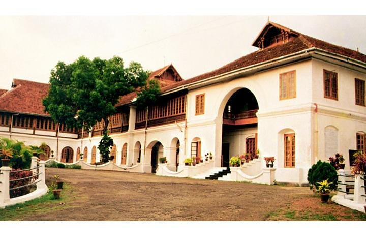
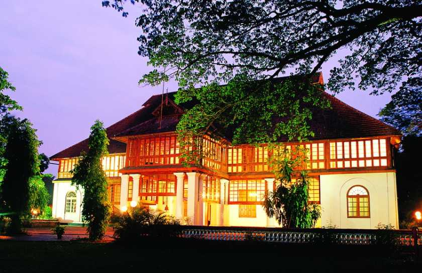
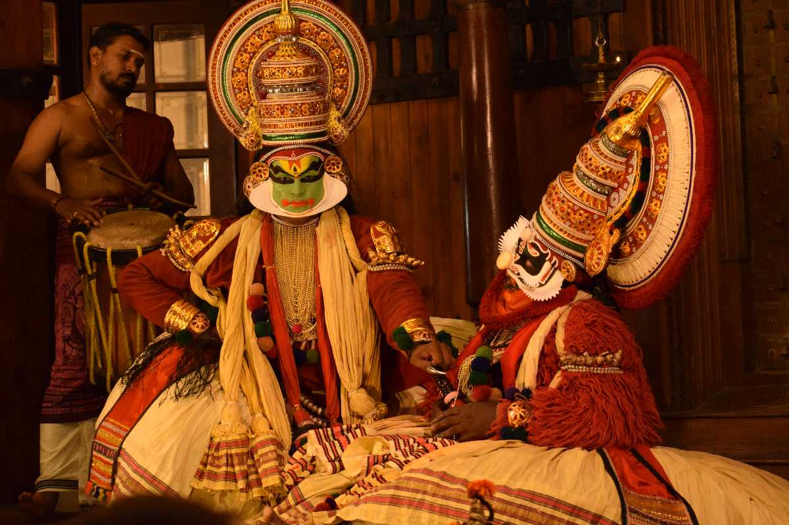

Ernakulam refers to the eastern, mainland portion of the city of Kochi in central Kerala, India. The city is the most urban part of Kochi and has lent its name to the Ernakulam district. Ernakulam is called the commercial capital of the state of Kerala. The Kerala High Court, the Office of the Corporation of Cochin and the Cochin Stock Exchange are situated here. The Ernakulam Junction or South station, Ernakulam Town or North Station and Ernakulam Terminus(now defunct) railway stations of the Indian Railways lies in Ernakulam. Initially, Ernakulam was the headquarters of the Ernakulam District but was later shifted to Kakkanad. Ernakulam was once the capital of the Kingdom of Cochin. It is located towards north-west of the state capital Thiruvananthapuram. The city has served as an incubator for many Malayali entrepreneurs and is a major financial and commercial hub of Kerala.
DESTINATIONS Must See
|

Hill Palace
Located at Tripunithura, The Hill Palace is the largest archaeological museum in Kerala.
Learn more
Kochi Marine Drive
The Marine drive in Kochi is one of the best places to spend time in the city and provides an amazing view of the sea.
Learn more

Bolgatty Palace
One of the oldest Dutch Palaces outside Holland, the Bolgatty Palace is situated on the Bolgatty Island.
Learn more

Kerala Kathakali Centre
This centre at Fort Cochin has seen many a dance performances! The amount of effort put in by the dancers is commendable.
Learn more